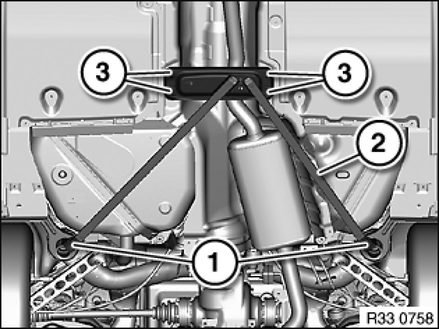

33 32 165 Removing and Installing or Replacing Tension Strut
33 32 165 - Removing and installing or replacing tension strut

Important!
Observe safety instructions 00 .. ... Lifting Vehicle With A Lifting Platform for raising the vehicle
Driving without the tension strut is not permitted!

Release screws (1, 3).
Remove tension strut (2).
Installation Note:
Tightening torque 33 32 11AZ 33 32 Control Arms and Struts (Rear) (to body).
Tightening torque 33 32 12AZ 33 32 Control Arms and Struts (Rear) (to compression strut).